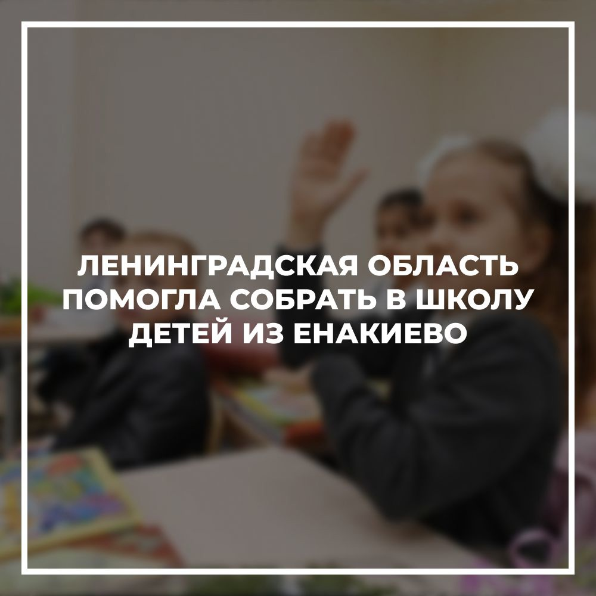
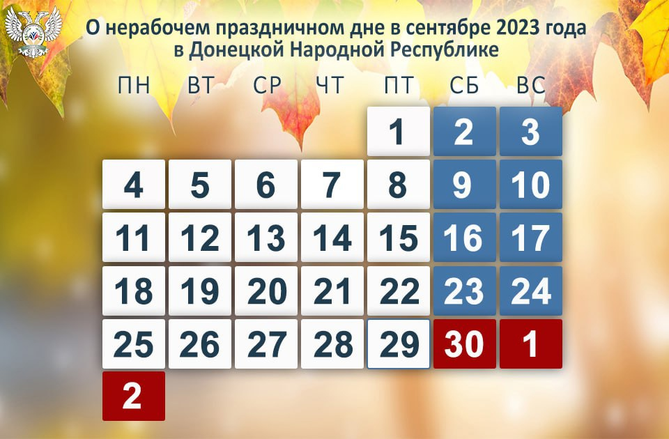

Енакиево
Ена́киево (укр. Єнакієве; с 1928 по 1937 год — Ры́ково, с 1937 по 1943 год — Орджоники́дзе) — город в номинально образованном Горловском районе Донецкой области Украины, административный центр номинально образованной Енакиевской городской общины. До 2020 года был городом областного подчинения. Входит в Горловско-Енакиевскую агломерацию. С апреля 2014 года контролируется самопровозглашённой Донецкой Народной Республикой, согласно законодательству Украины является временно оккупированной территорией.
Символика
Енакиево был одним из первых городов Донетчины, у которого появился собственный герб. Его проект был разработан в 1968 году. Авторская группа, в составе которой А. А. Чутчев, Г. А. Андриенко, А. К. Панасенко, А. Д. Уткин, сделала официальный символ города простым, лаконичным и в то же время очень выразительным, отобразив в нём историю Енакиево, рождение которого прежде всего связано с развитием металлургической и угольной промышленности.
Описание. В щите, скошенном справа красным и чёрными цветами, стилизованная золотая доменная печь с красной леткой.
Символика. Красное и чёрное поле герба символизируют металлургическую и угольную промышленность. Золотая доменная печь — символ первой на юге России доменной печи Старопетровского завода, на которой в 1862 году был получен первый чугун на угле.
Население
Рождаемость — 5,8 на 1000 человек, смертность — 20,6, естественная убыль — −14,8, сальдо миграции отрицательное (-9,9 на 1000 человек).
Динамика
Население городского совета на 1 октября 2021 года — 114 191 чел[3].
Рейтинг города (по численности населения) по состоянию на 1 января 2015 года:
| Место в Европе | Место в бывшем СССР | Место на Украине | Место в области |
|---|---|---|---|
| 929 | 364 | 48 | 7 |
Национальный состав
Согласно переписи, украинский язык в быту использует 13,8 % населения. За период с переписи 1989 года население сократилось на 36 %.
Данные переписи населения 2001 года [26]
| N | Национальность | Количество | Уд. вес (%) |
|---|---|---|---|
| 1 | Русские | 83726 | 51,44 |
| 2 | Украинцы | 73675 | 45,26 |
| 3 | Белорусы | 1777 | 1,09 |
| 4 | Армяне | 587 | 0,36 |
| 5 | Азербайджанцы | 366 | 0,22 |
| 6 | Евреи | 291 | 0,18 |
| Всего | 162778 | 100,00 |
Фотоальбом
Последние события из жизни города
-

Ленинградская область помогла собрать в школу детей из Енакиево
Ленобласть — в числе регионов-лидеров по обеспечению детей подшефных территорий всем необходимым для учебы. Об этом сообщил Руководитель Центрального исполнительного комитета партии «Единая Россия» Александр Сидякин. В Енакиево неравнодушные жители Ленинградской области отправили школьные принадлежности, рюкзаки, одежду и обувь, более 22 тыс. учебников, а также 750 школьных наборов для первоклассников. Регион постоянной основе помогает пополнять фонд школьных библиотек.
-
Заместитель главы администрации города Енакиево Божик Сергей Александрович, согласно графику, провел личный прием граждан.
Заместитель главы администрации города Енакиево Божик Сергей Александрович, согласно графику, провел личный прием граждан. Необходимость проведения личных приемов, их результативность подтверждается большим количеством граждан, желающих попасть на прием к руководителю. Сегодня на прием обратилось 14 жителей с вопросами жилищно-коммунального хозяйства, среди которых: накрытие крышкой канализационного колодца возле подъезда, ремонт дорожного полотна по ул. Коммунистическая (дорога к тубдиспансеру), ликвидация порывов водоводов по ул. Луганское шоссе и по ул. Гагарина, д. 38, удаление деревьев по ул. Турутина, в районе дома 141; кронирование зеленых насаждений по ул. Первомайская, д. 10, выделение асфальтной вырубки для планировки придомовой территории по ул. Первомайская, д. 10, срыв графика движения автобусного маршрута № 34 и многое другое. Все озвученные вопросы Сергей Александрович взял на личный контроль. Руководителям соответствующих предприятий и отделов администрации города Енакиево были даны поручения – рассмотреть обращения в кратчайшие сроки согласно действующему законодательству.
-
Работы по ремонту дорог в населенных пунктах республики близятся к завершению
Заместитель министра строительства и жилищно-коммунального хозяйства ДНР Максим Жуковский прокомментировал ход дорожных работ в муниципалитетах. «В 2023 году из запланированного объема работ в населенных пунктах Республики ремонт дорожного покрытия выполнен в среднем на 98,6%. В большинстве населенных пунктов план работы перевыполнен, это Дебальцево, Торез, Макеевка, Енакиево и другие».
-

В сентябре в Республике есть дополнительный нерабочий праздничный день – 30 сентября 2023 года (День возвращения Донецкой Народной Республики в Россию).
Так как 30 сентября 2023 года – выходной день (суббота), он переносится на следующий рабочий день – 02 октября 2023 года (понедельник). Напоминаем, что в предпраздничные дни продолжительность работы сокращается на один час. Таким образом, пятница 29 сентября 2023 года будет сокращенным рабочим днем.
-
Вниманию жителей города!
Енакиевский муниципальный участок сообщает, что в связи с аварийно-ремонтными работами на водоводе Д-500мм (сталь) 6.09.23г с 4-00 до 21-00 будет сокращена подача воды: часть города (Фурманова, Блюхера), п. Раздоловка, п. Енакиевский.
-
Более двухсот ребят из Енакиево отдохнули в детских лагерях Ленобласти
Оздоровительные смены в детских лагерях Ленинградской области посетили 267 ребят из Енакиево. За время отдыха дети из подшефного города смогли принять участие в соревнованиях, мастер-классах, играх, познакомиться с достопримечательными местами Ленинградской области и Санкт-Петербурга, а также получить массу впечатлений и обрести новых друзей.